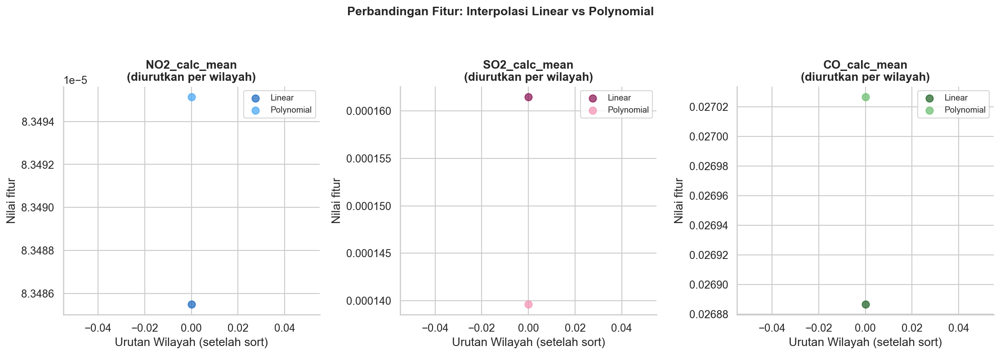

Tahap 1 - Pengambilan Data & Exploratory Data Analysis (EDA)#
Latar Belakang#
Tahap 1 merupakan fondasi dari seluruh alur analisis pada materi ini. Sebelum data dapat dianalisis atau dimodelkan lebih lanjut, kita perlu memastikan bahwa data berhasil dimuat, strukturnya dipahami, dan kualitasnya memadai. Karena itu, tahap ini berfokus pada tiga hal: memuat data, memisahkan metadata dari fitur numerik, dan melakukan eksplorasi awal terhadap data tersebut.
Data yang digunakan berupa hasil ekstraksi 204 fitur dari data polutan udara. Fitur-fitur ini tersedia dalam dua versi yang dibedakan oleh metode interpolasi yang dipakai untuk mengisi data yang hilang pada deret waktu aslinya:
File |
Metode Interpolasi |
|---|---|
|
Linear |
|
Polynomial |
Berbeda dengan pendekatan yang mengambil data dari basis data, pada materi ini data dimuat langsung dari file CSV lokal. Dengan demikian, tidak diperlukan konfigurasi koneksi, kredensial, maupun query apa pun. Cukup pastikan kedua file CSV berada di direktori kerja yang sama dengan notebook.
Analisis pada materi ini hanya berfokus pada satu wilayah, yaitu Kamal. Konsekuensinya, setiap file CSV hanya berisi satu baris data dengan 204 kolom fitur (ditambah kolom penanda wilayah), sehingga bentuk data fitur yang diharapkan adalah (1, 204). Karena hanya ada satu baris, beberapa analisis EDA yang lazim dilakukan pada data multi-wilayah (misalnya distribusi antarwilayah, deteksi outlier, atau korelasi antarfitur) menjadi tidak bermakna. Eksplorasi pada tahap ini sengaja dibuat ringkas dan diarahkan pada perbandingan nilai fitur antara kedua metode interpolasi.
Keluaran akhir tahap ini adalah sebuah file tahap1_data.pkl yang akan dibaca kembali pada Tahap 2.
1.1 Import Library & Konfigurasi#
Langkah pertama adalah mengimpor seluruh library yang dibutuhkan dan menyiapkan konfigurasi dasar. Pada sel ini kita juga membuat direktori output/ yang akan menampung gambar dan file hasil dari tahap ini. Parameter exist_ok=True memastikan tidak terjadi galat apabila direktori tersebut sudah ada sebelumnya.
import warnings
warnings.filterwarnings('ignore')
import os
import pickle
import numpy as np
import pandas as pd
import matplotlib.pyplot as plt
import seaborn as sns
# 1. Konfigurasi Awal
OUTPUT_DIR = 'output'
os.makedirs(OUTPUT_DIR, exist_ok=True)
plt.rcParams['figure.figsize'] = (13, 5)
sns.set_theme(style='whitegrid', palette='muted', font_scale=1.05)
print('Library berhasil diimpor.')
Output:
Library berhasil diimpor.
Tema whitegrid dari seaborn dipilih agar grafik pada bagian EDA mudah dibaca, sedangkan ukuran gambar bawaan (13, 5) disesuaikan untuk tampilan berbentuk lebar.
1.2 Memuat Data (dari File CSV)#
Pada langkah ini, kedua file CSV dibaca menggunakan pd.read_csv() dan disimpan ke dalam dua DataFrame terpisah: df_linear untuk hasil interpolasi linear dan df_poly untuk hasil interpolasi polynomial. Proses pemuatan dibungkus dengan blok try ... except agar apabila file tidak ditemukan atau gagal dibaca, pesan galat yang jelas akan ditampilkan.
# 2. Muat Data dari File CSV
try:
df_linear = pd.read_csv('Ekstraksi_204_Fitur_Polutan_Linear.csv')
df_poly = pd.read_csv('Ekstraksi_204_Fitur_Polutan_Polynomial.csv')
print("\nData berhasil dimuat dari file CSV lokal!")
except Exception as e:
print(f"Error memuat file: {e}")
Output:
Data berhasil dimuat dari file CSV lokal!
Catatan: Jika muncul pesan galat pada langkah ini, periksa kembali nama file dan lokasinya. Path yang digunakan bersifat relatif terhadap direktori kerja saat kode dijalankan.
1.3 Pemisahan Metadata dan Fitur Numerik#
Setiap file CSV memuat dua jenis kolom:
Metadata, yaitu kolom
daerahyang berfungsi sebagai penanda wilayah (pada materi ini bernilai Kamal).Fitur numerik, yaitu seluruh kolom lainnya (204 kolom) yang merupakan hasil ekstraksi fitur polutan.
Kedua jenis kolom ini perlu dipisahkan karena hanya fitur numerik yang akan diproses pada tahap-tahap berikutnya, sementara metadata disimpan terpisah agar identitas wilayah tetap dapat ditelusuri. Pemisahan dilakukan melalui fungsi bersihkan_df() yang diterapkan pada kedua DataFrame.
# 3. Fungsi Pembersih dan Pemisah Data
META_COLS = ['daerah']
def bersihkan_df(df, nama=''):
feat_cols = [c for c in df.columns if c not in META_COLS]
X = df[feat_cols].copy()
X = X.fillna(0)
meta = df[['daerah']].copy()
return meta, X
meta_linear, X_linear = bersihkan_df(df_linear, 'linear')
meta_poly, X_poly = bersihkan_df(df_poly, 'polynomial')
print('\nBentuk data fitur:')
print(f'Linear : {X_linear.shape} ({X_linear.shape[0]} wilayah x {X_linear.shape[1]} fitur)')
print(f'Poly : {X_poly.shape} ({X_poly.shape[0]} wilayah x {X_poly.shape[1]} fitur)')
Output:
Bentuk data fitur:
Linear : (1, 204) (1 wilayah x 204 fitur)
Poly : (1, 204) (1 wilayah x 204 fitur)
Hasil di atas menunjukkan bahwa kedua versi data memiliki bentuk yang sama, yaitu (1, 204): 1 wilayah (Kamal) dan 204 fitur. Kesamaan bentuk ini penting karena memungkinkan kedua versi dibandingkan secara langsung, fitur demi fitur.
1.4 Penanganan Missing Values#
Pada materi ini, penanganan missing values tidak dibuat sebagai langkah tersendiri. Data hasil ekstraksi yang digunakan sudah dalam kondisi bersih, sehingga tidak diperlukan proses imputasi yang rumit.
Meski demikian, fungsi bersihkan_df() pada subbab 1.3 tetap menyertakan baris X.fillna(0) sebagai pengaman. Jika suatu saat file CSV diganti dengan versi yang memuat sel kosong (NaN), nilainya akan otomatis diisi 0 sehingga tahap-tahap selanjutnya tidak terhenti akibat galat.
Catatan: Pengisian dengan nilai
0adalah pilihan yang sederhana. Apabila pada data lain nilai kosong memiliki makna tertentu, strategi pengisian yang lebih sesuai (misalnya rata-rata atau median) perlu dipertimbangkan.
1.5 Eksplorasi Data & Visualisasi#
Karena data hanya mencakup satu wilayah, eksplorasi difokuskan pada satu pertanyaan sederhana: apakah nilai fitur yang dihasilkan oleh interpolasi linear berbeda dari interpolasi polynomial?
Untuk menjawabnya, dipilih tiga fitur rata-rata polutan sebagai perwakilan, yaitu NO2_calc_mean, SO2_calc_mean, dan CO_calc_mean. Daftar ini disaring terlebih dahulu agar hanya memuat fitur yang benar-benar ada di kedua DataFrame. Setiap fitur kemudian divisualisasikan dalam satu panel berupa diagram sebar (scatter plot), dengan satu warna untuk metode Linear dan satu warna lain untuk metode Polynomial.
# 4. Eksplorasi Data (Visualisasi Histogram)
compare_feats = ['NO2_calc_mean', 'SO2_calc_mean', 'CO_calc_mean']
compare_feats = [f for f in compare_feats if f in X_linear.columns and f in X_poly.columns]
if compare_feats:
colors_lin = ['#1565C0', '#880E4F', '#1B5E20']
colors_poly = ['#42A5F5', '#F48FB1', '#66BB6A']
fig, axes = plt.subplots(1, len(compare_feats), figsize=(5 * len(compare_feats), 5))
if len(compare_feats) == 1: axes = [axes]
for ax, feat, cl, cp in zip(axes, compare_feats, colors_lin, colors_poly):
vals_lin = np.sort(X_linear[feat].values)
vals_poly = np.sort(X_poly[feat].values)
ax.scatter(range(len(vals_lin)), vals_lin, color=cl, label='Linear', s=60, alpha=0.7)
ax.scatter(range(len(vals_poly)), vals_poly, color=cp, label='Polynomial', s=60, alpha=0.7)
ax.set_title(f'{feat}\n(diurutkan per wilayah)', fontweight='bold')
ax.set_xlabel('Urutan Wilayah (setelah sort)')
ax.set_ylabel('Nilai fitur')
ax.legend(fontsize=9)
ax.spines[['top', 'right']].set_visible(False)
plt.suptitle('Perbandingan Fitur: Interpolasi Linear vs Polynomial', fontsize=13, fontweight='bold', y=1.05)
plt.tight_layout()
output_png = f'{OUTPUT_DIR}/03_linear_vs_poly.png'
plt.savefig(output_png, dpi=150, bbox_inches='tight')
print(f'\nGambar disimpan: {output_png}')
Output:
Gambar disimpan: output/03_linear_vs_poly.png

Cara membaca grafik. Setiap panel mewakili satu fitur. Sumbu-x menunjukkan urutan wilayah setelah diurutkan, sedangkan sumbu-y menunjukkan nilai fitur. Karena hanya ada satu wilayah (Kamal), setiap panel hanya memuat satu titik per metode, sehingga proses pengurutan (np.sort) tidak mengubah apa pun dan judul panel “diurutkan per wilayah” hanya bersifat formal.
Perbandingan dilakukan dengan melihat posisi vertikal kedua titik pada tiap panel:
Jika kedua titik hampir berimpit, kedua metode interpolasi menghasilkan nilai fitur yang relatif sama untuk fitur tersebut.
Jika kedua titik terpisah jauh, pilihan metode interpolasi memberikan pengaruh yang nyata terhadap nilai fitur, dan hal ini patut diperhatikan pada tahap analisis berikutnya.
Catatan: Dengan satu titik per metode, grafik ini hanya berfungsi sebagai pemeriksaan visual cepat, bukan sebagai analisis distribusi. Kesimpulan statistik yang lebih kuat memerlukan data dari lebih banyak wilayah.
1.6 Simpan Data untuk Tahap Berikutnya#
Langkah terakhir adalah menyimpan seluruh objek yang dibutuhkan oleh Tahap 2 ke dalam satu file pickle (.pkl). Dengan cara ini, Tahap 2 tidak perlu mengulang proses pemuatan dan pemisahan data, cukup membaca file tersebut. Objek yang disimpan dikemas dalam sebuah dictionary berisi:
X_lineardanX_poly: fitur numerik versi interpolasi linear dan polynomial,meta_lineardanmeta_poly: metadata wilayah untuk masing-masing versi,META_COLS: daftar nama kolom metadata.
# 5. Simpan Data (.pkl) untuk Tahap 2
data_to_save = {
'X_linear': X_linear,
'X_poly': X_poly,
'meta_linear': meta_linear,
'meta_poly': meta_poly,
'META_COLS': META_COLS,
}
save_path = f'{OUTPUT_DIR}/tahap1_data.pkl'
with open(save_path, 'wb') as f:
pickle.dump(data_to_save, f)
print(f'\nData disimpan ke: {os.path.abspath(save_path)}')
Output:
Data disimpan ke: /content/output/tahap1_data.pkl
Path absolut yang ditampilkan akan menyesuaikan lingkungan tempat kode dijalankan.
Dengan tersimpannya file ini, Tahap 1 selesai. Data dari wilayah Kamal telah dimuat, dipisahkan menjadi metadata dan 204 fitur numerik untuk masing-masing metode interpolasi, dieksplorasi secara ringkas, dan siap digunakan pada Tahap 2.